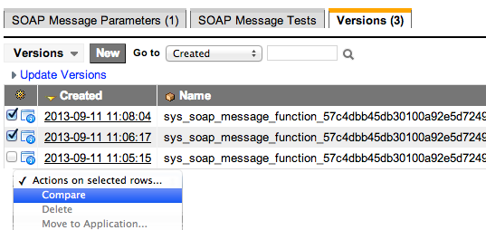

Versions
| |
Note: This article applies to Fuji and earlier releases. For more current information, see Versions at http://docs.servicenow.com
The ServiceNow Wiki is no longer being updated. Visit http://docs.servicenow.com for the latest product documentation. |
Contents
1 Overview
Version records track changes to a customized record over time so that administrators can compare or revert to specific versions later. Administrators can also transfer versions between instances with update sets or team development.
2 Version Records
The Update Versions [sys_update_version] table contains records that represent the state of a customizable object at a given point in time. A customizable record is any object that is tracked by update sets, such as business rules or script includes. A new version record is created automatically whenever a user changes a customizable record or changes the application file for the customizable record.
A baseline version record represents the version of a base system object as it was delivered in the most recent upgrade. Baseline versions are created only for objects that have been modified by a user, and they are updated each time the system is upgraded. In versions prior to the Dublin release, baseline versions are created for every customizable record. Baseline versions allow you to revert customizations to the most recent system version.
| Field | Description |
|---|---|
| Name | A unique identifier for coalescing versions of the same customized record. |
| Record name | Name of the customized record (starting with the Dublin release). |
| Source | Indicator of how the version was added on the instance.
|
| State | Indicator of whether the version is or has ever been loaded on the instance (starting with the Dublin release).
|
| Application | The application for the customized record, if it is assigned to an application (starting with the Dublin release). |
| Payload | The data for this version of the customized record. |
| Additional fields on the list view | |
| Reverted from | A reference to the older version record, if this version was created by reverting to an older version. |
| Fields that can be added by configuring the form | |
| Instance Name | The name of the remote instance where the version was originally created (starting with the Dublin release). |
| Instance ID | The URL of the remote instance where the version was originally created (starting with the Dublin release). |
| Related lists on the form view | |
| Version List | All versions of the customized record that are available on the instance (starting with the Dublin release). |
2.1 Transferring Versions
Administrators transfer version records between instances by moving customizations with update sets or team development.
- Update sets: committing an update set adds versions. For each update in the update set, the version that corresponds to the update is added on the local instance. See Committing Update Sets.
- Team development:
- Pulling retrieves from the parent instance all versions of customized records that have not already be pulled and adds them on the local instance. See Pulling Versions.
- Pushing adds to the parent instance only the current local version, not all the local versions. See Pushing Versions.
- Loading changes from peer instances adds selected versions to the local instance. See Comparing to Peer Instances.
You can view a list of versions for an object by using one of the following methods.
- For forms or lists, right-click the header and select Configure > Form Layout (Personalize > Form Layout in versions prior to Fuji) or Configure > List Layout (Personalize > List Layout in versions prior to Fuji). Under Related Links, click Show Versions.
- For tables that use the update_synch attribute, add the Versions related list to the form. This list is on several forms by default, including, business rules, UI actions, and client scripts.
- For any customizable object, right-click the form header and select Show Application File, then scroll down to the Related Record Versions related list (starting with the Dublin release).
You can navigate from a version record to:
- The customized object, by clicking the Show Related Record related link.
- The application file record for the object by clicking the Show Application File related link.
{kind=link}
4 Comparing Versions
You can compare versions of any customizable object that a user has modified, such as a form layout or business rule. You also compare the local and pulled version of an object when resolving collisions and when comparing changes in team development. Administrators can suppress versions for specific tables.
To compare a version to the current version of an object:
- From a Versions list, right-click the version and select Compare to Current.
- From the Version form, under Related Links, click Compare to Current.
To compare any two versions of an object:
- View a list of version records for an object.
- Select the check boxes beside the two versions to compare.
- The current version has the most recent creation date. For the current version, the State field is highlighted in green (starting with the Dublin release).
- Select the versions to compare
- In the Action choice list, select Compare. A comparison of the differences between the two versions appears.
- [Optional] Click Revert to this Version to revert to the older version of the object. This option is available only when changes can be reverted (see Reverting Changes).
{kind=link}
{kind=link}
5 Reverting Changes
You can undo changes to a customized record by reverting to an older version.
- View a list of version records for an object.
- [Optional] Compare the current version to the older version to ensure you are reverting the desired changes.
- Right-click the older version and select Revert to this version. A confirmation dialog box appears.
- If reverting to this version will result in data loss due to a database schema change, a warning message appears in the dialog box (starting with the Dublin release).
- Click OK to confirm the action.
- The current version is marked as a previous version.
- A new version record is added that duplicates the version selected in step 3. This new version is marked as the current version.
| |
Note:
|
6 Suppressing Versions
Administrators can specify tables for which customizations are not tracked in the Versions [sys_update_version] table.
Warning: If you suppress versions for tables:
|
{kind=link}
To suppress versions for tables:
- Navigate to sys_properties.list.
- Create a new property:
- Name: glide.update.suppress_update_version
- Type: string
- Value: a comma-separated list of tables. The default value is sys_user,sys_import_set_row.
7 Enhancements
7.1 Dublin
- The State field is added to show whether the version is or has ever been loaded on the instance. For the current version of a record, the field is highlighted in green.
- In the Source field, the Pull History value is added to indicate that the version was added by a pull in team development.
- The Instance Name and Instance ID fields are added to identify where the version was originally created.
- The Version List related list shows all versions of the customized record that are available on the instance.
- To improve upgrade performance, baseline versions are created only for objects that have been modified by a user. They are not created for every system object. During an upgrade, the baseline version is updated for every object that has customer updates, which allows administrators to revert customizations to the most recent system version.
- Changes to versions improve system performance when comparing versions.
Contents > Administer > Managing Data > System Update Sets
Contents > Build
Contents > Build > Team Development